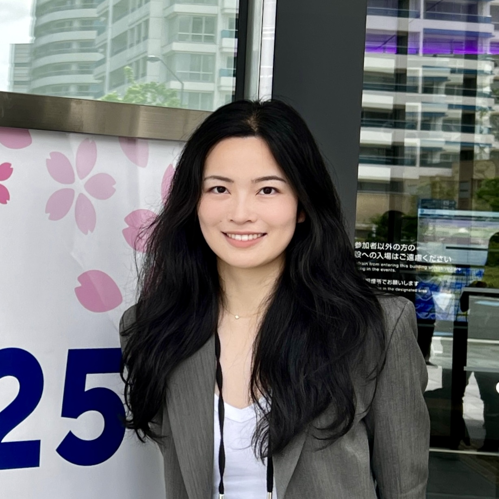

Submission format
Position papers, work-in-progress papers, demos, and provocations. Most submissions are 2-4 pages; provocations may be 1-2 pages.
GazeBCI-AR/VRCall for Papers
A UbiComp/ISWC 2026 workshop for concise papers on gaze, neural sensing, adaptive interaction, and immersive ubiquitous computing systems.
CFP quick facts
Dates may be adjusted as the workshop schedule is finalized. Camera-ready and workshop timing follow the UbiComp/ISWC 2026 workshop CFP.
Workshop scope
Eye tracking can reveal visual attention, information needs, task strategies, and interaction intention. Brain signals can complement gaze with cognitive load, affective state, fatigue, and neural intention. GazeBCI-AR/VR brings these communities together around deployable, ethical, and adaptive AR/VR systems.
Position papers, work-in-progress papers, demos, and provocations. Most submissions are 2-4 pages; provocations may be 1-2 pages.
Accepted workshop papers are planned for ACM DL and adjunct proceedings inclusion, subject to official conference requirements.
We welcome systems, studies, datasets, toolkits, methods, critical perspectives, and future research agendas.
Topics of interest
Call for papers
Submissions should use the ACM template required for UbiComp/ISWC 2026 workshop papers and be submitted through PCS. Accepted workshop papers targeted for ACM DL inclusion must be ready by the July 31, 2026 camera-ready deadline. Contact email: gazebci@163.com.
2-4 pages on viewpoints, challenges, or future research directions.
2-4 pages on ongoing research, early findings, systems, or studies.
2-4 pages on prototypes, toolkits, datasets, or sensing systems.
1-2 pages on critical, speculative, or discussion-provoking ideas.
Tentative program
The workshop is scheduled for Monday, October 12, 2026, 08:00-12:30 local time in Shanghai. The final program will be adjusted after paper acceptance, including the number and grouping of presentation sessions.
Organizers introduce the workshop scope, aims, and shared questions.
Invited perspectives will frame current progress, challenges, and opportunities.
Accepted submissions will be presented through short, focused talks. The final allocation depends on the submission pool.
Coffee break and informal exchange.
Small groups discuss fusion, deployment, evaluation, ethics, accessibility, and future applications.
Groups report insights, open challenges, and opportunities for collaboration beyond the workshop.
Participants discuss next steps, follow-up activities, and takeaways.
Organizers
Zhejiang University of Technology
swc@zjut.edu.cn
Lancaster University
j.hu23@lancaster.ac.ukShanghai Jiao Tong University
dongzx@sjtu.edu.cnContact and submission
Submit papers through PCS. In PCS, select SIGCHI -> Ubicomp/ISWC Workshop 2026 -> Ubicomp/ISWC Workshop 2026 ETBCI, then use the contact email for workshop questions.